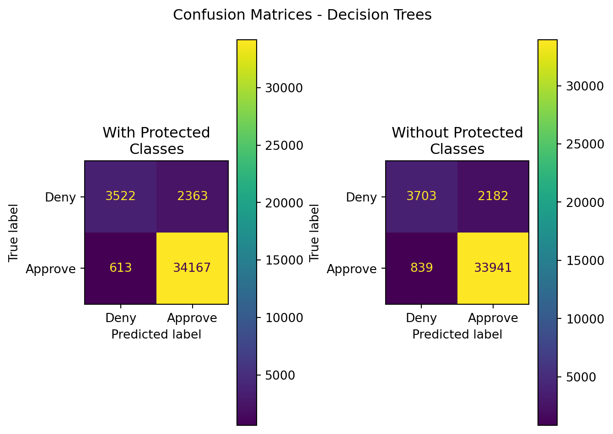
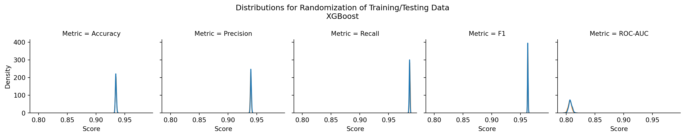

| Model | Data | Accuracy | Precision | Recall | F1 | ROC-AUC |
|---|---|---|---|---|---|---|
| Random Forest | With Protected Classes | 0.926817 | 0.935313 | 0.982375 | 0.958267 | 0.790423 |
| Random Forest | Without Protected Classes | 0.925710 | 0.939595 | 0.975877 | 0.957392 | 0.802552 |
11 Ensemble Modeling
11.1 Overview
Ensemble methods are a combination of machine learning algorithms that are trained separately (either in series or parallel), and their outputs are combined to determine the classification of a given new vector of data. This provides a method that can improve predictive performance of a model, mitigate issues of model overfitting, as one model may be overfit to the data, but other independently or separately trained models can not have such overfit, and as a result, better balance the bias-variance curve of the output predictions overall for the model. What is meant by series and parallel, though?
11.1.1 Bagging
Bagging is a parallel method. This means that each model is trained independently of one another on separate random subset samplings of the source training data. Each model is then optimized for that subset of the data, and each model gets a vote in the classification of a testing datapoint. Because of this voting process, the output tends to have an odd number of models that are independently trained (at least for binary classification systems differentiating between a positive and negative outcome). Random Forests are an example of a bagging ensemble learning method.
11.1.2 Boosting
Boosting is a series method. For models trained in series, each subsequent model is trained based on the outcomes of the previous model, tending to focus more on records that were misclassified by the previous model. In this way, the subsequent models identify those misclassified records while still retaining appropriate predictive performance on the previous correctly classified records. An example of a boosting algorithm is called Adaptive Boosting (or ada boost)
11.1.3 Random Forests
Random forests take the decision tree algorithm as described in Chapter 8, and trains multiple decision trees using that algorithm in parallel. Each tree gets a vote on the classification of new records.
11.1.4 XGBoost
11.2 Data and Code
Data for this section leverages the same data as for decision trees and can be found here:
Code to execute XGBoost and Random Forests can be found in (app-Ensemble?).
11.3 Results

| Model | Data | Accuracy | Precision | Recall | F1 | ROC-AUC |
|---|---|---|---|---|---|---|
| XGBoost | With Protected Classes | 0.933653 | 0.939455 | 0.985969 | 0.962150 | 0.805219 |
| XGBoost | Without Protected Classes | 0.932645 | 0.939074 | 0.985164 | 0.961567 | 0.803712 |
Of these two ensemble methods, one can see that XGBoost outperformed Random Forest classification. However, the results compared to those in the other sections examining Bernoulli Naive Bayes, Logistic Regression, and Support Vector Machines far outshine the performance of XGBoost - especially when comparing ROC-AUC.
Both of these models had a more rapid time for training, fitting, and predicting outcomes, at the cost of accuracy and other model performance metrics.
In the case of XGBoost, a single test appears to favor the inclusion of protected class data. While that is the case, the difference in performance is less than 1% across all metrics. Is this statistically significant?
| Stat | z-score | p-value | top performer | top mean | difference in means |
|---|---|---|---|---|---|
| Accuracy | 0.177171 | 0.859374 | With Protected Classes | 0.934603 | 0.000011 |
| Precision | 4.179453 | 0.000029 | With Protected Classes | 0.940035 | 0.000229 |
| Recall | -6.218760 | 0.000000 | Without Protected Classes | 0.986727 | 0.000260 |
| F1 | -0.107982 | 0.914010 | Without Protected Classes | 0.962694 | 0.000004 |
| ROC-AUC | 3.743439 | 0.000182 | With Protected Classes | 0.807282 | 0.000676 |

In short - yes, statistically significant difference in performance exist, and they favor inclusion of protected classes for precision and ROC-AUC, and favor exclusion of protected classes in recall. All other p-values are above the significance threshold of \(\alpha\) = 0.003.
Operationally, however - there is no real impact. The significant differences are less than a fraction of a percent and in no way shape or form justify their inclusion as a substantially better improvement over their exclustion.